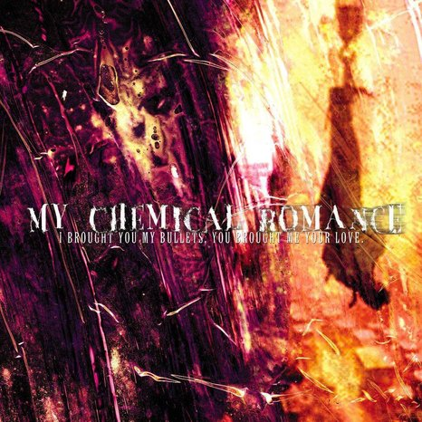

I brought you my bullets, you brought me your love
Es el álbum debut de la banda. Este álbum, al igual que los tres que le siguen, es conceptual. Esta ocasión cuenta la historia de los Demolition Lovers, una pareja de asesinos en serie que tras arrastrar numerosos crímenes consigo, acaban muriendo en el desierto; esta historia continúa en su segundo disco. Ya que el nombre del álbum es demasiado largo, los fans y la banda lo abrevian frecuentemente como Bullets.
La canción más famosa de este álbum fue Demolition Lovers: